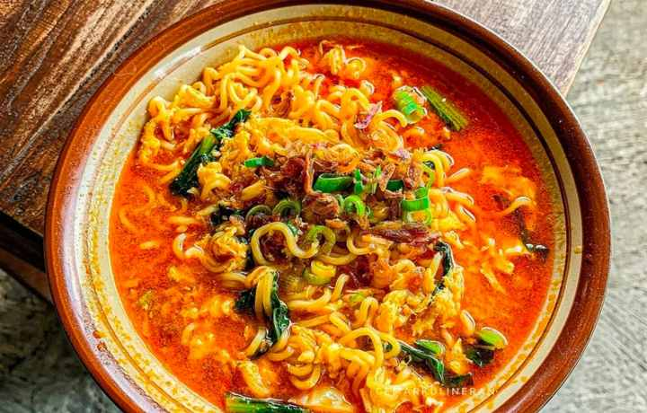

Mie Dok-Dok Recipes

Description
Mie dok-dok merupakan salah satu hidangan yang mungkin banyak dikenal oleh kalangan
mahasiswa. Mie rebus ini cocok sekali jika disantap saat hujan.
Cara membuatnya pun cukup mudah. Tertarik untuk membuat?
Yuk, dapatkan resepnya berikut ini.
Ingredients:
- 1 bungkus mie instan goreng atau rebus
- 2 siung bawang merah
- 1 siung bawang putih
- 6 buah cabai rawit
- 1 buah sosis
- Garam dan gula secukupnya
- 1 butir telur
- 1 genggam sawi hijau
- Minyak goreng secukupnya
Steps:
- Haluskan bawang putih, bawang merah, gula dan garam. Kemudian tumis, bumbu halus
dengan sedikit minyak hingga harum.
- Masukkan telur, goreng orak-arik.
- Tambahkan air secukupnya, masak hingga mendidih.
- Masukkan mie instan, masak hingga setengah matang.
- Tambahkan sayuran, sosis, dan bumbu mie instan. Masak hingga kuah agak meresap.
- Mie dokdok siap disajikan.
Go Back to Main Page